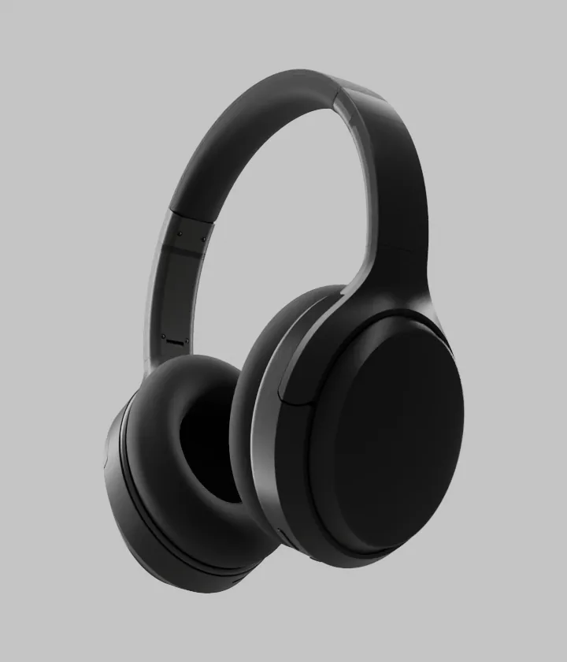

Your homepage, upgraded.
3D product animations for your website.
Plays on its own, or with the scroll.
Interactive Turntable.
Drag to rotate. Or pick a different color.
Assemble, take apart, you name it.
The details that sell it, shown in motion.
What you get
The animation
Rendered frames of your product, compressed for the web, in desktop and phone sizes.
The player
Code that plays the frames on load, on scroll or by drag, like the sections above. Or we build the whole page.
Fast pages
Frames load just ahead of the scroll, so the page opens quickly. This page works the same way.
Stills
Renders from the same scenes, for your store and social posts.
How it works
- 1
You send CAD files or photos of your product.
- 2
We model, light, stage and animate it.
- 3
You review the frames in your browser.
- 4
We deliver the files and the code.
